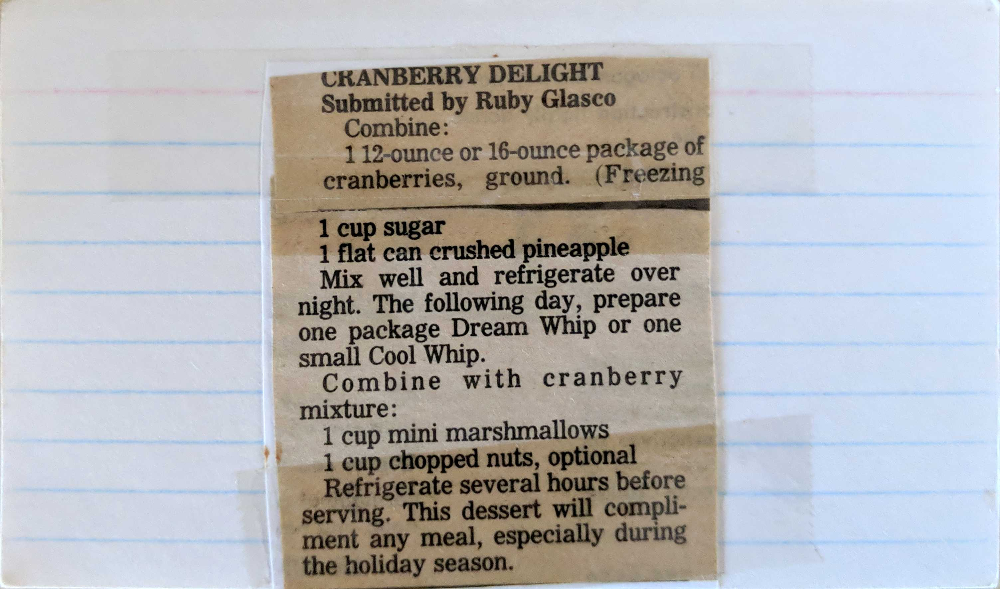

Cranberry Delight
Submitted by Ruby Glasco
Combine:
1 12-ounce or 16-ounce package of cranberries, ground.
1 cup sugar
1 flat can crushed pineapple
Mix well and refrigerate over night. The following day, prepare one package Dream Whip
or one small Cool Whip.
Combine with cranberry mixture:
1 cup mini marshmallows
1 cup chopped nuts, optional
Refrigerate several hours before serving. This dessert will compliment any meal, especially
during the holiday season.